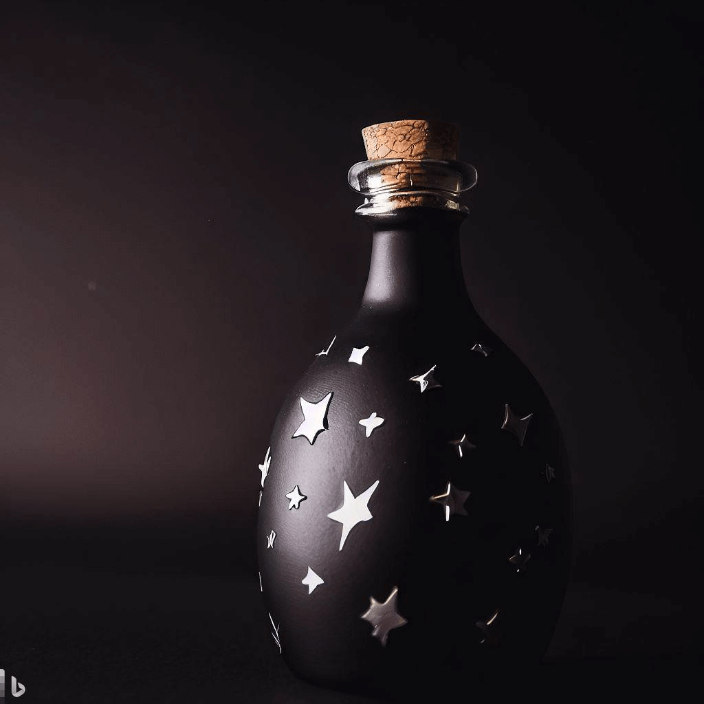

Este anillo ligero dorado es el accesorio ideal para los magos que quieren aprender a usar los encantamientos elementales. Está purificado y preparado para recibir cualquier tipo de magia, desde el fuego hasta el agua. Con este anillo, podrás practicar tus hechizos sin miedo a dañarlo o perderlo. Además, tiene un diseño elegante y sencillo que combina con cualquier atuendo.